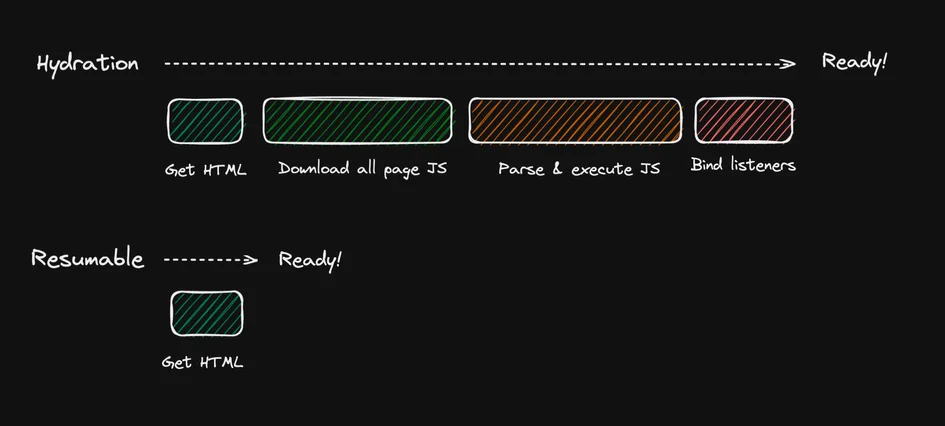

Frontend
del s.XXI
En 2023 tenemos cohetes reutilizables, inteligencia artificial y... muchos pero que muchos frameworks JS
Entender todo el ecosistema web moderno
 y por el camino descubrir los conceptos clave que
y por el camino descubrir los conceptos clave que un buen desarrollador frontend debe conocer en 2023!
Para esto tendremos
que cubrir
- Frameworks
- Librerías
- Runtimes
- Bundlers
- ... de todo un poco
Speedrun frontend
Nos pasamos el juego en 4 horas
Pero...
empecemos por el principio
¿Nos conocemos un poco mejor?
Empezamos 🚀
Hay 1000 opciones para empezar a desarrollar pero tenemos que recordar siempre
Lo importante no es la herramienta que utilizamos sino el resultado final
(Que no nos pasen cosas asi...)HTML

Es sencillo y parece inofensivo
Pero la semántica marca profudamente el proyecto
Una sola palabra
Sencillo VS ¿¿??
Simplemente funciona
200 lineas de codigo custom para solucionar problemas de
- foco automatico
- pistas para voice over
- acciones por teclado
- etc.
Accesibilidad
Engloba los problemas mencionados
Es incluso una potencial fuente de demandas en sectores como el financieroSimplemente utilizando las etiquetas correctas evitamos tener que aprendernos tooodo
el estándar WCAG
It's dangerous out there

Take one of these with you
Estructura
Independientemente de la tecnología
SIEMPRE dividimos la página en
Acciones
El usuario principalmente puede interactuar con
Hay que intentar siempre traducir el lenguaje visual a estos elementos
Elementos muy utiles
| Elemento | Demo |
|---|---|
| Dialog |
|
| Details |
Titulo colapsableContenido |
| Progress |
y muchos más elementos...
Además una buena semántica favorece que la app se pueda ejecutar en todo tipo de dispotivos
(No solo existen los smartphones)

También ayudará a que el SEO de la aplicación parta de una buena base
¿Cómo lo logramos?
- Primero maquetamos el HTML
(sin estilos ni funcionalidad) - Lo validamos W3C validator
- Añadimos las siguientes capas: CSS y JS
¿Muy básico?
Si, extramadamente básico.
(os sorprendería la cantidad de proyectos que no tienen una buena base)Estan sugiendo cada vez más iniciativas como
HTML First para reivindicar la importancia de HTML en el desarrollo frontend
HTMX
La sencillez de hacer las cosas bien
Aporta interactividad sobre HTML
utilizando atributos "hx-"
Instalación
Simplemente añadimos el script a un documento HTML
¿Qué puede hacer?
- Modificar partes del documento dinámicamente
- Cualquier peticion HTTP
¿Muy sencillo?
CSS
Queremos aplicaciones con estilo pero...
No tenemos paciencia para dejarlas cargar
2s de carga = 10% tiempo total
Es normal para un usuario abandonar la página enlos primeros 20 segundos
CSS es bloqueante
La aplicación no se renderiza hasta que no ha descargado y procesado los estilos
Es la primera capa que tiene un impacto en las métricas Web Vitals de una aplicación
Largest Contentful Paint (LCP)
¿Cuánto tardamos en enseñar algo relevante al usuario y como podemos ser más rápidos?
Cumulative Layout Shift (CLS)
¿Cómo de estable es el contenido de la página?
Complejidad creciente
¿Cómo podemos mantener los archivos CSS?
¿Estamos condenados a archivos grandes que desaprovechamos?
Encapsulamiento
¿Cómo evitamos los conflictos en archivos CSS grandes?CSS in JS
Ya podemos manejar archivos CSS grandes pero...
Tenemos que optimizar activamente el código para reducir el impacto en LCP y CLS
(desarrollado con emotion)Treeshaking
Las herramientas de bundling modernas son capaces de hacer treeshaking
Analizan el código, eliminan las partes que no utilizamos y juntan todos los mini archivos en uno solo
Vite
El que mayor traccion tiene en este momento*
Aunque hay que estar muy atentos a Bun
*Take with a grain of salt
JavaScript
En este punto TODO puede ir mal
❤️ Javascript
Typescript
Si... algo bueno salió de Microsoft
Vamos a ver un ejemplo
Compatibilidad
Más problemitas en JavaScript...
Cada navegador va a su ritmo
Atentos a SWC tambiénJS en exceso
Debería hacerla app interactiva, no pintarla!
Este punto es el más crítico para Web Vitals
Un buen ejemplo builder.io
Client Side Rendering (CSR)
No hemos llegado a este punto por capricho
Todos los avances en el ecosistema JS han permitido romper los monolitos, separar el front del back
Server Side Rendering (SSR)
¿Es posible usar frameworks frontend sin añorar PHP?
Ahora tenemos soporte para SSR generalizado en
Pero... ¿Funciona sin JS?
Eso es! primero renderizamos un DOM estático
Luego le añadimos interactividad mediante un proceso de hidratación
Vamos a ver un ejemplo con React
Generado con Typescript Express StarterFrameworks 3.0
Tenemos frameworks planteados desde un inicio con SSR en mente
- Qwik - Resumability
- Remix / Next - SSR con hidratación
- Astro - Island Architecture
Hidratacion vs Resumability
 Podéis leer más en QwikQwik
Vamos a ver una pequeña demo de como funciona
Últimos debates en front
React Server Components
Normalmente compartimos el bunlde entre cliente y servidor. React facilita una definición de componentes que se excluyen del bundle de cliente.Signals
Se trata de modificar quirurjicamente el DOM. Guardar las referencias a los nodos y mutarlos sin necesidad de VDOM o zone.jsNext Steps
Componentes Universales
Utilizando Mitosis podemos utilizar un mismo código fuente para múltiples frameworksWeb Components
Es un estándar web, lo hemos visto brevemenente con el shadow DOM en las demos anteriores pero hay mucho másService Workers
Ya es un estándar, podemos descargar el hilo principal de JS pero no lo aprovechamos. Hay herramientas como Partytown que buscan democratizar esto.